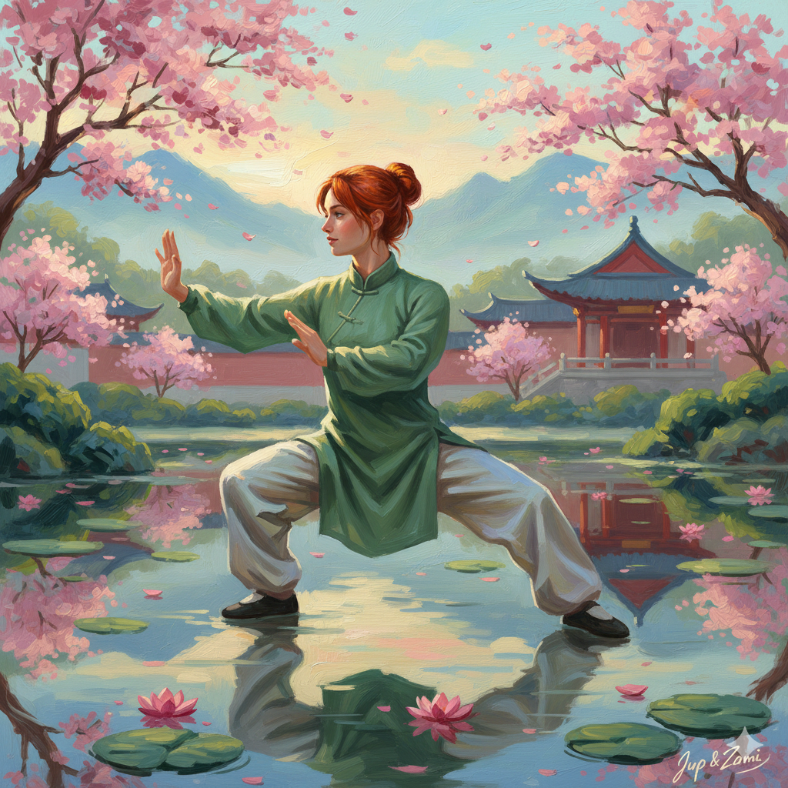

🔊 Vorlesen An
🌙 Dark
⛶ Vollbild
☯️ 太極拳 Tai Chi ☯️
Tai Chi Chuan - 89 Formen (108)

Teil Eins - Die Erde
00:00 / 15:00
🌍 Teil 1 - Die Erde
👤 Teil 2 - Der Mensch
☁️ Teil 3 - Der Himmel
1
Position préparatoire
Vorbereitende Position
◀ Zurück
▶ Start
⏸ Pause
Vor ▶
↻ Zurücksetzen
Geschwindigkeit anpassen
10 Sekunden pro Form
Musik-Steuerung
🎵 Musik An
🔔 Klangschale
Lautstärke
70%